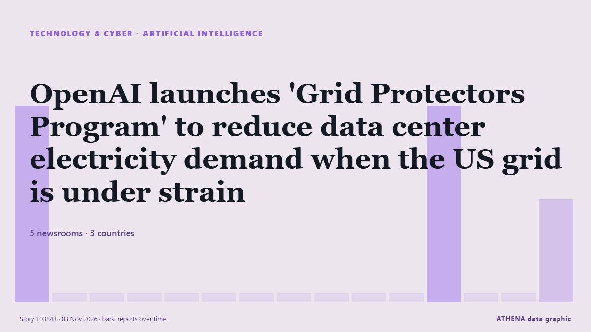

Inteligencia artificial
| 22 oct | 0 |
|---|---|
| 23 oct | 0 |
| 24 oct | 0 |
| 25 oct | 0 |
| 26 oct | 0 |
| 27 oct | 0 |
| 28 oct | 0 |
| 29 oct | 1 |
| 30 oct | 3 |
| 31 oct | 1 |
| 1 nov | 4 |
| 2 nov | 10 |
| 3 nov | 5 |
| 4 nov | 0 |
Los titulares se muestran en inglés, tal como se publicaron.

OpenAI launches 'Grid Protectors Program' to reduce data center electricity demand when the US grid is under strain
As company looks to avoid the anti-data center local pushback. de Data Center Dynamics
Marvell strikes $115B deal for Lumentum
Marvell is acquiring Lumentum in an all-stock deal valued at $115 billion, representing $1,132 per share of Lumentum common stock. #pressrelease. de Light Reading
ADNOC becomes first energy company to deploy OpenAI Frontier in landmark deal with G42
Announced at ADIPEC 2026 in Abu Dhabi, the partnership aims to value crude before extraction and slash oilfield planning times from months to hours. de Arabian Business
Anthropic Reports $17 Billion Quarterly Revenue Ahead of IPO
Anthropic’s revenue reached $17 billion for the three months ended Sept. de PYMNTS
AI models mostly smarter than top scientists, OpenAI's Altman says
CEO says AI models capable of performing white-collar work but people must 'remain in control of the future' de Express Tribune
Merz says next German president 'must be a woman' — report
German President Frank-Walter Steinmeier's second term is due to end in March next year. de DW English
(LEAD) Lee orders review for establishment of cybersecurity task force
SEOUL, Nov. 3 (Yonhap) -- President Lee Jae Myung on Tuesday instructed official... de Yonhap (English)
Oracle taps investors for US$20bil to finance AI expansion
NEW YORK: Oracle plans to raise US$20 billion through bond and share sales, regulatory filings showed on Monday, as the software giant taps investors to fund its costly AI and cloud infrastructure… de New Straits Times
Cardi B Tells Students to Pass Exams Without Using AI: ‘Don’t Ask ChatGPT for the Answer’
Cardi had a message for the students who attended Johns Hopkins University’s Hoptoberfest over the weekend. de Billboard
HSBC to open Hong Kong AI Institute following Singapore launch
The AI unit will work with Hong Kong University of Science and Technology as its anchor academic partner, although the bank's CEO Georges Elhedery did not disclose headcount details. de CNA (Channel NewsAsia)
Samsung execs meet Open AI's Sam Altman to discuss AI transformation
SEOUL, Oct. 31 (Yonhap) -- Top executives from key Samsung affiliates met with O... de Yonhap (English)
Nvidia weighs credit support for Nscale as data center, IPO face pressure
Nvidia is reportedly evaluating billions of dollars in credit support for UK neocloud provider Nscale to help cover power and construction costs for a data center in West Virginia. de DigiTimes Asia
Sam Altman meets with Samsung, SK as memory crunch deepens
OpenAI CEO Sam Altman met with executives from Samsung Group and SK Group during a brief visit to South Korea on October 31, as tightening memory supplies and growing commitments to major AI… de DigiTimes Asia
Malicious Claude Code extension on Cursor planted SSH backdoors
A malicious version of Anthropic's Claude Code VS Code extension was distributed through Cursor's extension marketplace for approximately 11 hours on October 29, exposing up to 5,000 developers to… de BleepingComputer
(LEAD) Lee vows bold investment in AI, future growth engines to boost growth potential
SEOUL, Nov. 2 (Yonhap) -- President Lee Jae Myung on Monday pledged bold investm... de Yonhap (English)
Asia shares bend under AI stress; Apple earnings loom
SYDNEY: Asian share markets slipped on Monday as worries about the sustainability of the artificial intelligence (AI) investment boom loomed over the tech sector, while the high price of oil limited… de New Straits Times
OpenAI Cuts Funding Target by $10 Billion as Investor Jitters Shake AI Markets
OpenAI has cut the target for its current funding round from $30 billion to $20 billion amid investor concerns about the artificial intelligence market, The Financial Times reported Friday (Oct. de PYMNTS
‘Air-con nation’ Singapore eyes alternatives to cool down
Some buildings in the city-state are exploring active chilled beams and radiant cooling to replace compressor units that release hot air into the environment. de Free Malaysia Today
Alibaba partners with Apple to integrate Qwen AI model into Apple Intelligence for Chinese market
Feature to launch with official iOS 27.3 release in December. de Anadolu Agency (English)